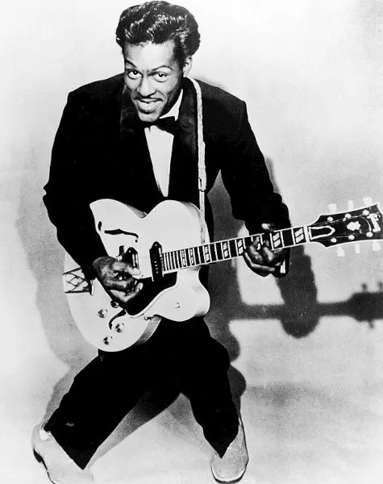
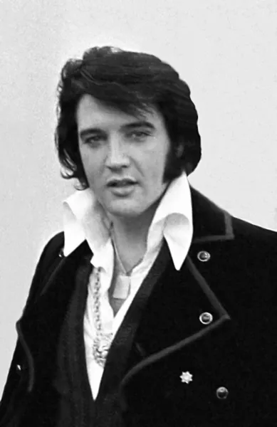

O rock é um gênero musical que surgiu nos Estados Unidos por volta de
1950. Possui raízes em gêneros já existentes na época, como jazz,
folk, country e blues.
Mais do que apenas música, o rock representa criatividade, um estilo e
modo de vida.
Durante os mais de 50 anos de sua existência, o rock passou por
transformações
que geraram subgêneros e vertentes dentro do estilo musical. Grandes
nomes fizeram
história dentro do rock, como Elvis Presley, Chuck Berry, Jimi Hendrix,
Janis Joplin e Rita Lee.
A origem do rock
O rock surgiu nos Estados Unidos, por volta da década de 1950. Seu
nascimento se deu pela mistura de gêneros já existentes e
emergentes na época, como jazz, folk, country e blues. O jazz, o folk, o
country, o blues e o rock possuem a cultura negra estadunidense como uma
origem em comum. O rock, assim como o country, bebeu dessa fonte nos
seus primeiros anos, mesmo que ao longo das décadas os gêneros tenham se
“embranquecido”. Em seus primeiros anos, grandes nomes da história do
rock se destacaram, como Johnny Cash, Little Richard, Jackie Brenston e
Chuck Berry, o pai do rock.

Chuck barry
Apesar de sua origem negra, o rock se tornou popular nos Estados Unidos
quando um homem de origem branca cantou o gênero, Elvis Presley. De
origem pobre, Elvis cresceu no Tennessee e cantava no coro de sua
igreja. O cantor ajudou a popularizar o som entre os brancos, sendo
conhecido como rei do rock. A postura de Elvis era rebelde para a época,
e o cantor imitava o estilo de músicos negros que deu origem ao gênero.

Fotografia de Elvis Presley, considerado o rei do rock foi o responsável
pela difusão do rock nos Estados Unidos na década de 1950.
História do rock → Rock nos anos 60
Na década de 1960 duas grandes bandas inglesas ajudaram a tornar o
gênero ainda mais popular, são elas The Beatles e The Rolling Stones. Os
Beatles possuíam um posicionamento diferente de Elvis e até mesmo de The
Rolling Stones, usando ternos, cabelos cortados e um estilo considerado
por muitos como “careta”. Os Rolling Stones, por sua vez, tinham como
características a ousadia e rebeldia, características essas que se
tornaram marcas registradas do rock. Também foi nessa época que surgiram
subgêneros, como o rock progressivo e o rock psicodélico. No final dos
anos de 1960, e com o surgimento do movimento hippie, houve a realização
do Festival Woodstock, que foi um dos grandes marcos do rock e da
contracultura. No festival, apresentaram-se grandes nomes e bandas do
rock, como Janis Joplin, Bob Dylan, Jimi Hendrix, Grateful Dead, The Who
e Creedence Clearwater Revival.
→ Rock nos 70 e 80
Se nas duas primeiras décadas de seu surgimento o rock apresentou ao
mundo os nomes que vieram a ser os precursores de todo o movimento
artístico, nas décadas de 1970 e 1980 o gênero apresentou os “novos
clássicos” do rock. Em 1970, por exemplo, fizeram sucesso bandas e
artistas como Iggy Pop, The Ramones, Kiss, AC/DC, Queen, The Runaways,
Heart e Aerosmith. Foi também nessa época que surgiu o punk rock, como
Ramones, The Clash e Sex Pistols. E heavy metal, com Iron Maiden e
Motorhead.
→ Rock nos anos 90
Nos anos de 1990, houve o surgimento do grunge, com letras e arranjos
melancólicos. Nesse movimento, surgiram bandas como U2, Pearl Jam, Green
Day, Nirvana e Foo Fighters. Há também o surgimento de diversas bandas
britânicas, como Oasis, Radiohead e Blur. Esse movimento ficou conhecido
como britpop.
→ Rock nos anos 2000
Já nos anos 2000, o movimento emo foi uma marca forte do rock e do indie
rock. Nesse cenário, surgiram bandas como Evanescence, Muse, 30 Seconds
to Mars, My Chemical Romance e Paramore. Há também nomes como System of
a Down, The Killers, The Strokes e Arctic Monkeys.
O álbum dos anos setenta que tornou possível surgir o Rage Against The
Machine Tom Morello amava rock antes de imaginar que poderia fazer
parte dele. Quando criança, viu o Kiss em Chicago e saiu impressionado
com aquele espetáculo enorme, cheio de personagens e luzes. Também tinha
pôsteres do Led Zeppelin no quarto. O problema era que tudo aquilo
parecia pertencer a outro planeta.
clique na imagem para reportagem completa
Rammstein registra novas músicas e deixa fãs na expectativa
Os
fãs do Rammstein ficaram empolgados com uma novidade vinda dos
bastidores do grupo. Esta semana, cinco títulos de músicas inéditas da
banda alemã foram oficialmente adicionados ao banco de dados da GEMA
(Sociedade Alemã para Direitos de Execução e Reprodução Mecânica da
Música
KISS vai celebrar os 30 anos do MTV Unplugged com relançamento em vinil
duplo O KISS vai celebrar os 30 anos do MTV Unplugged com relançamento
em vinil duplo e picture disc duplo de luxo. A versão picture disc vem
embalada em uma capa dupla premium inédita, revestida em papel prateado
metalizado, com fotos inéditas e um pôster dupla face totalmente novo.